5. 1차계의 실제적인 예들
이번에는 1차 전달함수로 표현될 수 있는 몇 가지 실제적인 계들을 살펴보고, 이후 비선형계의 동적응답을 근사적으로 나타내는 방법도 기회가 되면 알아보려고 한다. 이 근사법을 선형화라고 한다.
1)액위
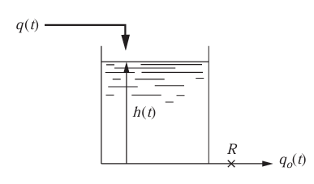
위와 같이 저항R이 걸려있고 일정한 단면적 A의 탱크로 구성된 계를 살펴보자. 저항을 통한 부피유속을 q0라고 할 때 액위h와 출구 유속 q0 사이에 다음과 같은 선형관계가 성립한다고 가정할 것이다.
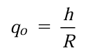
이처럼 유속과 액위h사이에 선형관계가 성립하는 것을 선형저항이라고 부르며 흐름이 층류이면 보통 선형조ㅓ항이다. 하지만 일반적으로 파이프나 밸브를 통한 난류 유속은 루트h에 비례한다. 그리고 간단한 기하학적 형태를 가진 둑을 통한 유속은 Kh^n 꼴로 나타난다.
일정한 밀도를 가진 액체가 q(t)로 탱크로 흐르는데, 이때 h를 유속과 관련시키는 전달함수를 구해보겠다. 먼저 탱크에 물질수지를 적용한다.
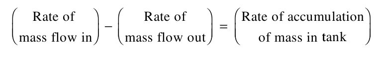
앞에서 정의된 변수들을 사용하면 물질수지는 다음 식으로 표현된다.
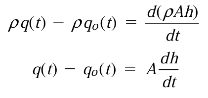
이제 q0식을 대입하면 식은 다음과 같이 바뀐다.

이제 전달함수를 구하기 위해 편차변수를 도입해보자. 정상상태일 때 값은 다음과 같다.

이 둘을 빼면 다음과 같이 정의된다.


이제 라플라스 변환을 해보자.

이후 전달함수를 구하면 다음과 같은 형태가 된다.
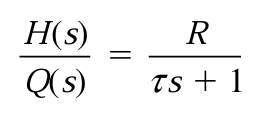
이는 우리가 자주 봐왔던 1차계의 형태이다. 여기서 τ=AR이다. 이것은 입구유속에 따른 높이에 대한 전달함수이다.
이제 액위계의 입구 유속에 도입될 임펄스 함수를 생각해보자. 임펄스 함수는 아주 짧은 시간 동안 유속을 갑자기 큰 값으로 증가시켜 놓는 방식으로 근사하게 나타낼 수 있다. 즉 탱크 안에 갑자기 액체를 부어넣는 것과 같다. 이에 대한 실제적인 예제를 살펴보자.
시간상수 τ=1min 이고 저항R=1/9ft/cfm인 탱크가 10ft^3/min의 입구 유속을 가지고 정상상태 조업되고 있다. 이때 갑자기 0.1분간 9ft^3의 물을 탱크에 더 넣어 유속을 100ft^3/min으로 증가시킨다. 탱크 액위의 응답을 도표로 나타내보아라.
물이 갑자기 들어온 것이므로 임펄스 응답과 비슷할 것이다. 먼저 공정의 전달함수를 살펴보면 다음과 같다.
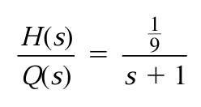
물질수지를 적용하여 쉽게 구할 수 있었다. 이때 입력은 0.1분동안만 잠시 올라가는 것이므로, 두 계단 변화의 차이로 구할 수 있다.
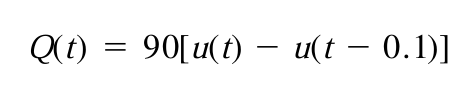
이를 라플라스 변환하면 다음과 같다.
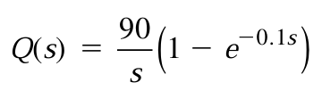
이제 이걸로 H(S)를 구해보자.
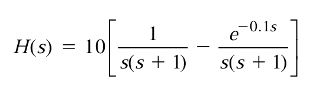
이를 역변환하면 다음과 같다.
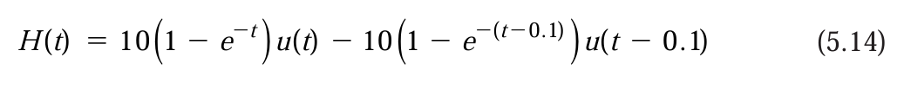
또는
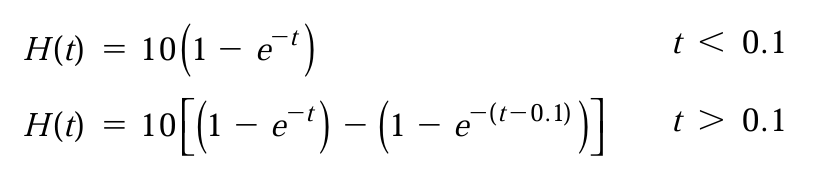
이렇게 된다. 또 실제 1차 시스템에 임펄스 함수를 가했을 때, 응답은 다음식으로 나타남을 지난 포스팅에서 공부하였다.
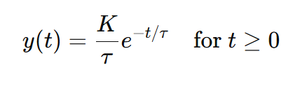
이 둘을 비교해보자.
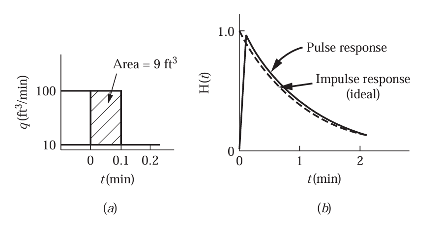
이상적인 임펄스와 매우 같음을 알 수 있다. 따라서 이 문제는 크기 9의 임펄스 입력을 줬다고 치환해서 풀어도 좋을 것이다.
그외 혼합공정, 가열공정에서 출구 농도와 출구 온도를 유량과 관계시키는 것 또한 1차 시스템의 예시이다.
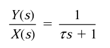
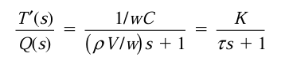
이는 모델링의 형태가 비슷한데서 온다.
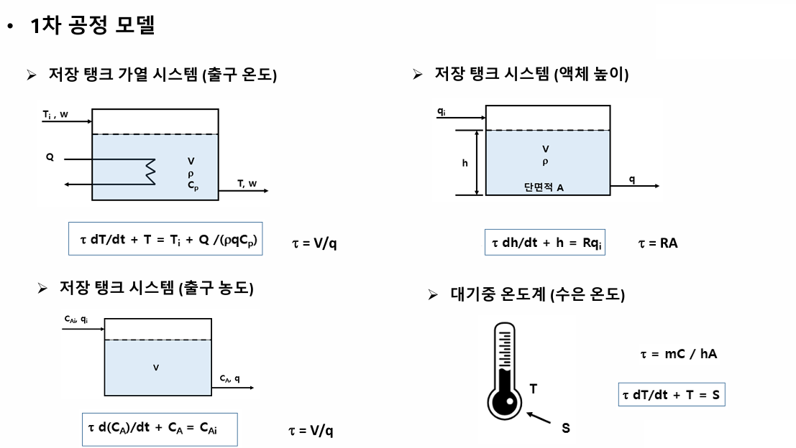
각 예에서의 시간상수는 다음과 같다.
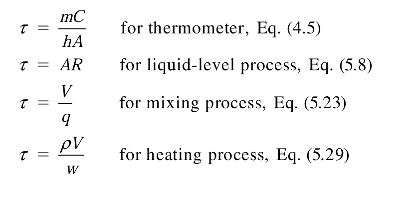
이를 적용하여 내용을 요약하면 다음과 같다.
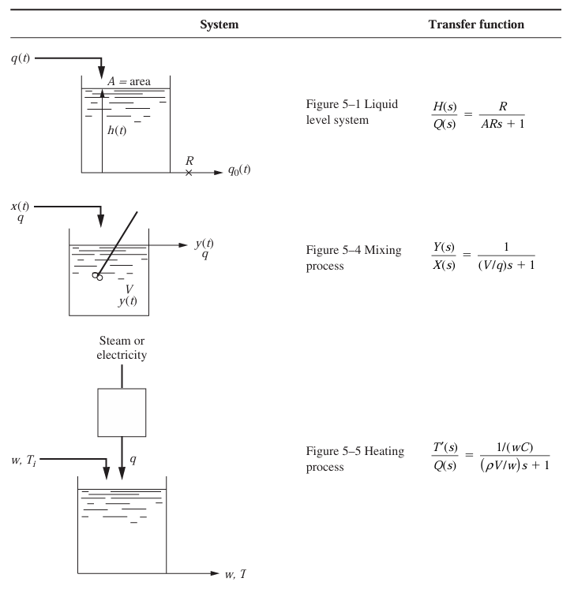